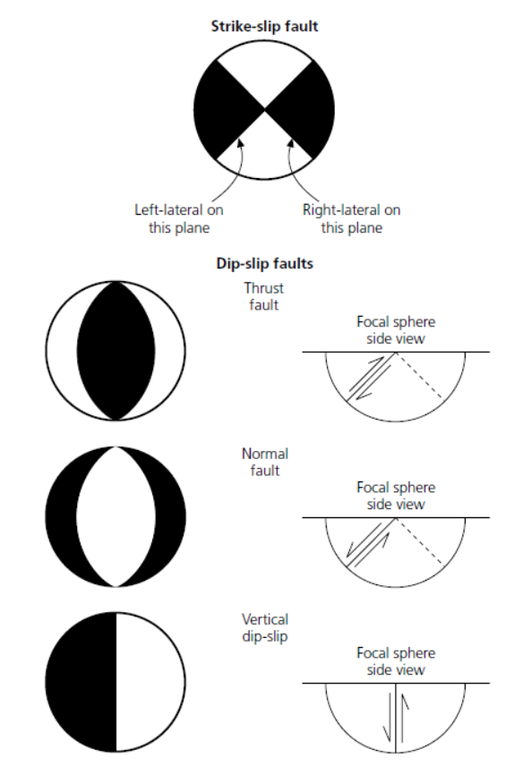
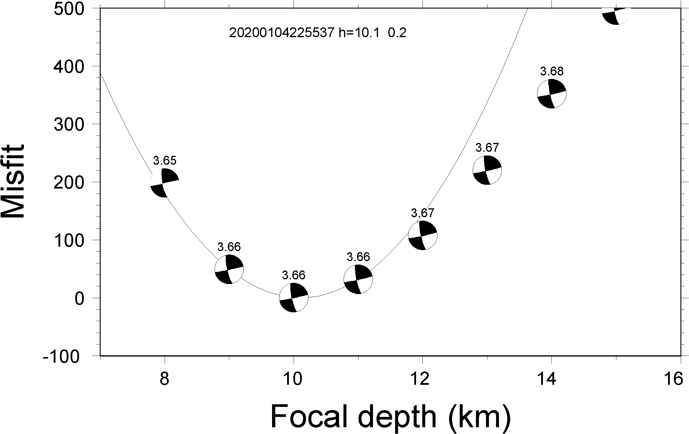
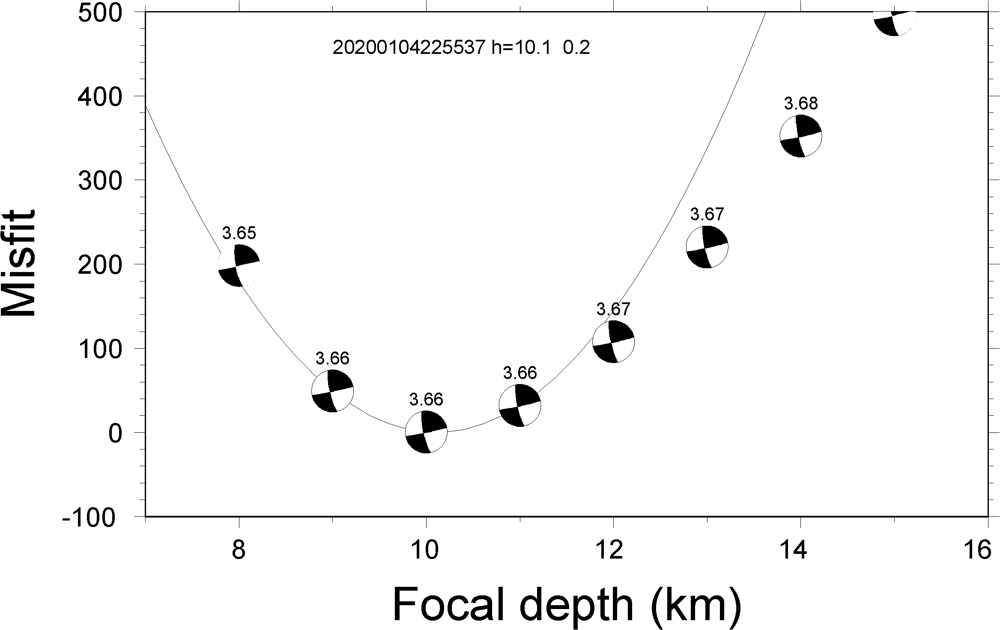

Focal mechanism¶
Waveforms recorded at a seismic station, W(t), compose of three components:
W(t) = S(t) * G(t) * I(t); (1)
where S(t) represents the source, G(t) stands for the Green’s functions, and I(t) is the instrument response. Therefore, retrieving source parameters of one earthquake S(t) requires deconvolving instrument response I(t) and Green’s functions G(t) from the actual data W(t). We generally remove instrument responses after obtaining the waveform data. Therefore, we have the data in displacement or in velocity, u(t) = S(t) * G(t). The corresponding synthetic displacement s(t) for a douple-couple source can be expressed as
s(t) = M0 ∑ Ai(ϕ -θ,β,λ)Gi(t); (2)
where Gi are the Green’s functions, Ai are the radiation coeffcients, and ϕ is the station azimuth, M0 is scalar moment,θ,β, and λ are strike, dip, and rake, respectively. Then we perform a grid search in all possible solutions of strike, dip, and rake to obtain the best fit by finding the minimal residual between the data and synthetics. This procedure consists of the following three steps, (1) computing Green’s functions, (2) preparing data seismograms, and (3) deriving focal mechanism solutions. This tutorial will mostly cover step (3).
Here we compute focal mechanism solutions using the Cut and Paste” method (CAP) [Zhu and Helmberger, 1996]. This method decomposes seismograms and uses amplitude information in different time windows (e.g., Pnl/surface wave) to increase the stability and resolution of focal mechanism solution. Please refer to [Zhu and Helmberger, 1996] for details of the CAP method. The earthquake example used in the gCAP program is the 2008 Illinois Mw 5.2 earthquake. It is a left-lateral strike-slip event based on focal mechanism solutions and aftershock locations [Yang et al., 2009].
——– Prof. Hongfeng Yang
Developed by Han CHEN.
1 Introduction¶
1.1 What is focal mechanism¶
To describe the geometry of a fault, Scientists assume that the fault is a planar surface across which slip occurred during an earthquake. The focal mechanism describes the fault geometry of the seismogenic fault (e.g., strike(θ), dip(β)) and the slip in the fault (e.g., rake(λ)). The beach ball were the lower-hemisphere stereographic projection of the fault geometry.
{kind=link}
1.2 package required¶
fkpackageSeismic Analysis Code (
SAC) packagegCAP3Dpackage
2 Installation¶
2.1 fk¶
fk is a program written by Prof. Lupei ZHU for calculating the synthetic Green’s function based on a horizontally layered velocity model. The detailed installation of fk could be find on here.
1. Files download
1## Download
2$ wget http://www.eas.slu.edu/People/LZhu/downloads/fk3.3.tar
3## Unzip
4$ tar -xvf fk3.3.tar
5## make dir "~/Src" and move the fold to "~/Src"
6$ mkdir -p ~/Src/
7$ mv fk ~/Src/
2. File modification and compilation
There are some errors in the source code of fk. Please download the file and put it into the ~/Src/fk for modifying the Make file.
1$ cd ~/Src/fk/
2## modify the Make file
3$ patch < fk3.3-v20190618.patch
4## compilation
5$ make clean
6$ make
7## Modify the environment variable and add the fk path to PATH
8$ echo 'export PATH=${HOME}/Src/fk/:${PATH}'>> ~/.bashrc
9$ source ~/.bashrc
3. Run fk
Type fk.pl in the terminal, there will be help information if installation is succeeded
1$ fk.pl
2Usage: fk.pl -Mmodel/depth[/f_or_k] [-D] [-Hf1/f2] [-Nnt/dt/smth/dk/taper] [-Ppmin/pmax[/kmax]] [-Rrdep] [-SsrcType] [-Uupdn] [-Xcmd] distances ...
3...
2.2 Seismic Analysis Code (SAC)¶
SAC is one of the most widely used data analysis software packages in the field of natural seismology. The installation of SAC could be found at the website.
Apply SAC source file¶
You will need to submit an application online to obtain the SAC package from IRIS：http://ds.iris.edu/ds/nodes/dmc/forms/sac/
2.2.1 Installation for linux¶
1. Install dependent libraries
> for Ubuntu/Debian:
1$ sudo apt update
2$ sudo apt install libc6 libsm6 libice6 libxpm4 libx11-6
3$ sudo apt install zlib1g libncurses5
> for CentOS/Fedora/RHEL:
1$ sudo yum install glibc libSM libICE libXpm libX11
2$ sudo yum install zlib ncurses-compat-libs
2. Install binary packages
1## Unizp
2$ tar -xvf sac-102.0-linux_x86_64.tar.gz
3## Move to installation position
4$ sudo mv sac ~/opt
3. Configuration variable
Add the environment variables and SAC global variables in ~/.bashrc
1$ echo 'export SACHOME=~/opt/sac'>> ~/.bashrc
2$ echo 'export SACAUX=${SACHOME}/aux'>> ~/.bashrc
3$ echo 'export PATH=${SACHOME}/bin:${PATH}'>> ~/.bashrc
4$ echo 'export SAC_DISPLAY_COPYRIGHT=1'>> ~/.bashrc
5$ echo 'export SAC_PPK_LARGE_CROSSHAIRS=1'>> ~/.bashrc
6$ echo 'export SAC_USE_DATABASE=0'>> ~/.bashrc
7$ source ~/.bashrc
4. Run sac
Type sac in the terminal, there will be version information if installation is succeeded
1$ sac
2 SEISMIC ANALYSIS CODE [11/11/2 3 (Version 1 .6a)]
3 Copyright 1995 Regents of the University of California
4
5SAC>
2.2.2 Installation for MacOS¶
1. Preparation
Install command line tools and X11 graphical interface related tools (XQuartzunder) MacOS
1$ xcode-select --install
2$ brew install --cask xquartz
2. Install binary packages
1## Unizp
2$ tar -xvf sac-102.0-mac.tar.gz
3## Move to installation position
4$ sudo mv sac ~/opt
3. Configuration variable
Add the environment variables and SAC global variables in ~/.zshrc
1$ echo 'export SACHOME=~/opt/sac'>> ~/.zshrc
2$ echo 'export SACAUX=${SACHOME}/aux'>> ~/.zshrc
3$ echo 'export PATH=${SACHOME}/bin:${PATH}'>> ~/.zshrc
4$ echo 'export SAC_DISPLAY_COPYRIGHT=1'>> ~/.zshrc
5$ echo 'export SAC_PPK_LARGE_CROSSHAIRS=1'>> ~/.zshrc
6$ echo 'export SAC_USE_DATABASE=0'>> ~/.zshrc
7$ source ~/.zshrc
4. Run sac
Type sac in the terminal, there will be version information if installation is succeeded
1$ sac
2 SEISMIC ANALYSIS CODE [11/11/2 3 (Version 1 .6a)]
3 Copyright 1995 Regents of the University of California
4
5SAC>
2.3 gCAP3D¶
gCAP is a method for inversion of focal mechanism solutions developed by Prof. Lupei Zhu. The source code of gCAP could be found in His Home page.
The code is now open source. The installation of gCAP could be found on seisman website.
Here I integrated the file in the website and gave the modified package file for you download.
1. Download the file and unzip
1## Download
2## Unizp
3$ tar -xvf gCAP3D.1.0.Cuseistut.tar
2. Download supplementary file and unzip
Refer to the seisman website above to download gcap_utils.tar.gz, unzip and put all files into the gCAP3D directory.
3. Install binary packages
1## Move to installation position
2$ sudo mv gCAP3D ~/Src
3## change dir to gCAP3D
4$ cd ~/Src/gCAP3D
5## compilation
6$ make clean
7$ make
4. Configuration variable
Add the environment variables and SAC global variables in ~/.bashrc
1$ echo 'export PATH=~/Src/gcap:${PATH}'>> ~/.bashrc
2$ source ~/.bashrc
5. Modify directory
Open cap3D.pl, change the directory on Line 17 from ‘~/Src/gCAP3D/cap_plt.pl’ to ‘{your home directory}/Src/gCAP3D/cap_plt.pl’
6. Run gCAP3D
Type cap3D.pl in the terminal, there will be version information if installation is succeeded
1$ gCAP3D.pl
2 ===== CAP seismic source tensor inversion using seismic waveforms ====
3 Ref: Zhu and Helmberger, 1996, BSSA 86, 1645-1641.
4 Zhu and Ben-Zion, 2 3, GJI, submitted.
5 ...
3 Data processing¶
Tip
The steps of focal mechanism inversion using gCAP3D
Calculating the Green’s function
Remove the instrument response (PZ or RESP file) to get the real ground motion (requiring response files; find the details in sac manual).
Rotate the NEZ components to RTZ direction (ps, remember to remove the original NEZ data in the event folder). An introduction to these two coordinate systems can be found at this web
Transform the data into the unit of cm/s by multiplying
1e-7(default unit in SAC data isnm), which is the default unit in CAP.Set the onset time of the event as the reference time (the zero point in the time series). Find the details in sac manual.
Pick the p arrival time and write the time in t1 marker, (for the noisy data, band pass filter can be applied to pick the p arrival more accurately.) Remember that the bandpass filtered data should NOT be saved in the folder. All the sac file in the folder will be used in waveform inversion.
Remember to remove the waveform data from the folder whose P arrival is too dim to be seen.
Resample the data to Δ𝑡 that the same as the Green’s function
Set up the “info.eve” file under each event folder. It is a five-column file, of which the format is: “o-marker evla evlo evdp mag”.
To run CAP:
Input command: make ${event_name}/weight.dat; and then write the p arrival time – t1 into the eighth column of “weight.dat”;
Input command: make ${event_name}/mt.best to start the waveform inversion process.
check the uncertainty
Note
Note that the unit of displacement data obtained by transferring the PZ file is m; the default unit of SAC is nm, so it must be multiplied by 1e9 to convert to the default unit of SAC.
3.1 Green’s function calculation¶
The first step of runing gCAP is building a Grenn’s function library by using fk package. An velocity model file (GD.vel) is need for the calculation. here is the velocity model used in this tutorial. The default setting of gCAP puts the Green’s function library under ~/data/models/Glib
Tip
There are two types of velocity model that could be used in fk, with the third column is the Vs or the vp/vs ratio. -Kmodel/depth/k, should be used while the 3rd column is vp/vs ratio (vp). The -S parameter controls the source type. -S: 0=explosion; 1=single force; 2=double couple (2).
1## mkdir the Green's function library directory
2$ mkdir ~/data
3$ mkdir ~/data/models
4$ mkdir ~/data/models/Glib
5## move to Green's function library directory
6$ cd ~/data/models/Glib
7## build a directory for velocity model GD
8$ mkdir GD
9$ cd GD
10## cp GD.vel to GD directoty, please replace the '/path/to/fk/GD.vel' to the real path in your system
11$ cp /path/to/fk/GD.vel .
12## calculate the Green's function library using fk
13$ fk.pl -MGD.vel/15/k -N512/0.2 -S2 05 10 15 20 25 30 35 40 45 50 55 60 65 70 75 80 85 90 95 100 105 110 115 120 125 130 135 140 145 150 155 160 165 170 175 180 185 190 195 200 205 210 215 220 225 230 235 240 245 250 255 260 265 270 275 280 285 290 295 300 305 310 315 320 325 330 335 340 345 350 355 360 365 370 375 380 385 390 395 400 405 410 415
14$ fk.pl -MGD.vel/15/k -N512/0.2 -S0 05 10 15 20 25 30 35 40 45 50 55 60 65 70 75 80 85 90 95 100 105 110 115 120 125 130 135 140 145 150 155 160 165 170 175 180 185 190 195 200 205 210 215 220 225 230 235 240 245 250 255 260 265 270 275 280 285 290 295 300 305 310 315 320 325 330 335 340 345 350 355 360 365 370 375 380 385 390 395 400 405 410 415
3.2 Sac file preparation¶
The sac file preparation could be done by using SAC software or other softwares, such as the Obspy. Here we briefly introduce the steps while using SAC. The details of commands used in this chapater could be found in the sac manual.
1. Remove the instrument response
> Use PZ file:
1## Merge PZ files of all stations into the same file
2$ cat SAC_PZs_* >> SAC.PZs
3## remove the instrument response by command: transfer
4$ sac
5SAC> r *.SAC
6## When going to the instrument response, try to choose a wider frequency band
7SAC> trans from pol s SAC.PZs to none freq 0.004 0.007 40 45
8SAC> mul 1.0e9
9SAC> w over
10SAC> q
> Use RESP file:
1## Merge RESP files of all stations into the same file
2$ cat RESP.*.*.*.* >> RESP.ALL
3## remove the instrument response by command: transfer
4$ sac
5SAC> r *.SAC
6## When going to the instrument response, try to choose a wider frequency band
7SAC> trans from evalresp fname RESP.ALL to none freq 0.004 0.007 40 45
8SAC> w over
9SAC> q
2. Rotate the NEZ components to RTZ direction
1$ sac
2SAC> r ./example.n ./example.e
3SAC> lh cmpinc cmpaz
4 FILE: ./example.n - 1
5 --------------
6 cmpinc = 9.000000e+
7 cmpaz = 0.000000e+00
8 FILE: ./example.e - 2
9 --------------
10 cmpinc = 9.000000e+
11 cmpaz = 9.000000e+
12## Rotate to Great Circle Path
13SAC> rotate to gcp
14SAC> lh cmpinc cmpaz
15 FILE: ./example.n - 1
16 --------------
17 cmpinc = 9.000000e+
18 cmpaz = 2.440466e+
19 FILE: ./example.e - 2
20 --------------
21 cmpinc = 9.000000e+
22 cmpaz = 1.144047e+02
23## Save as R component and T component
24SAC> w example.r example.t
25SAC> q
3. Resampling the sac file
1SAC> r example.SAC
2SAC> lh delta npts
3
4 delta = 1.000000e-02
5 npts = 1000
6## change the sampling rate to 0.005
7SAC> interp delta 0.005
8SAC> lh
9
10 delta = 5.000000e-03
11 npts = 1999
12SAC> q
4. Mark the P and S arrivels
The arrivels could be labeled by using SAC by using ppk command as well. please refer to the sac manual).
3.3 Focal mechanism inversion¶
After the sac files prepared, we could start to run the gCAP inversion. here we provided the SAC files of the 01/04/2020 Offshore Pearl River Delta earthquake [CHEN et.al., 2021] for you download. Please download it the unzip it and them change your current directory to 01-04-2020-earthquake.
1$ cd ./01-04-2020-earthquake
1. Make weight.dat file
1#### please copy the following command to a bash script and then run the bash file.
2
3#!/bin/bash
4
5dir=20200104225537
6cd $dir
7pwd
8rm temp
9for sac in *z
10 do
11 sta=$(echo $sac | awk -F "." '{print $1}')
12 dist1=$(saclst dist f $sac | awk '{print $2}')
13 dist_c=$(echo $dist1 | awk '{printf ("%d\n",$1/5+0.5)}')
14 dist=$(echo ""$dist_c"*5" |bc)
15 P=$(saclst a f $sac | awk '{print $2}')
16 #echo $dist1 $dist
17 printf "%-10s %03d %-1s %-1s %-1s %-1s %-1s %3.1f %-1s\n" $sta $dist "1" "1" "1" "1" "1" $P "0" >> temp
18done
19cat temp | sort -n -k2 > weight.dat
The generated file as follows
1$ cat weight.dat
2$ HKPS 035 1 1 1 1 1 7.2 0
3 ZHH 035 1 1 1 1 1 7.2 0
4 HKOC 040 1 1 1 1 1 8.3 0
5 SZN 060 1 1 1 1 1 10.3 0
6 ZHS 065 1 1 1 1 1 11.8 0
7 TIS 100 1 1 1 1 1 18.0 0
8 XNH 100 1 1 1 1 1 17.1 0
9 SCD 115 1 1 1 1 1 19.4 0
10 HUZ 140 1 1 1 1 1 22.7 0
11 HUD 170 1 1 1 1 1 26.8 0
12 ZHQ 180 1 1 1 1 1 27.9 0
13 HYJ 195 1 1 1 1 1 30.1 0
14 LTK 195 1 1 1 1 1 29.6 0
15 XFJ 200 1 1 1 1 1 29.8 0
16 YGJ 200 1 1 1 1 1 30.0 0
17 XIG 205 1 1 1 1 1 31.1 0
18 ZIJ 225 1 1 1 1 1 32.9 0
19 YND 230 1 1 1 1 1 33.5 0
20 LIP 260 1 1 1 1 1 37.1 0
21 HUJ 270 1 1 1 1 1 38.9 0
22 SHG 310 1 1 1 1 1 42.9 0
Tip
The weight file controls the components of each station that will be used in the inversion. if the number is set as 0, the component will be excluded in the inversion.
Station Azimuth Pz Pr Sz Sr Sh P-arrival time
2. Run the inversion
After generate the weight.dat file, please change your working direcroty to 01-04-2020-earthquake
1$ cd ../
1#### please copy the following command to a bash script and then run the bash file.
2
3#!/bib/bash
4
5## set the velocity model
6model=hn
7## set the target event
8event=20200104225537
9## set the event magnitude
10mag=3.5
11
12## loop the inversion for variou focal depth
13for h in 08 09 10 11 12 13 14 15 100
14do
15 cap3D.pl -H0.01 -P180000 -S2/5/0 -T20/50 -D1/1/0.5 -C0.05/0.2/0.03/0.1 -W1 -J0/0.01/0/0.01 -X10 -M$model"_"$h $event;
16done
17
18## obtained the inversion result and plot figure
19grep -h Event $event/$model_*.out > junk_$model.out
20./depth.pl junk_$model.out $event > junk_$model.ps
Note
The key paramters of cap3D.pl are as following:
-H the delta (1/samping rate) of the date
- -S max. time shifts in sec for Pnl and surface waves (1/) and tie between SH shift and SV shift:
tie=0 shift SV and SH independently, tie=0.5 force the same shift for SH and SV (0.5).
-T max. time window lengths for Pnl and surface waves (35/70).
-C filters for Pnl and surface waves, specified by the corner frequencies of the band-pass filter. (0.02/0.2/0.02/0.1).
-W use displacement for inversion; 1=> data in velocity; 2=> data in disp (0).
The inversion should be conducted multiple times with various parameters to achieve robust inversion result.
 

{kind=link}
3.3 Uncertainty analysis¶
The uncertainty of the CAP inversion result can be estimated using a bootstrapping inversion method (Tichelaar and Ruff, 1989), in which stations were randomly selected from the station pool (21 stations in total), allowing multiple sampling.
1#### please copy the following command to a bash script and then run the bash file.
2
3#!/bib/bash
4
5model=hn
6event=20200104225537
7mag=3.5
8
9##making bootstrapping inversiong weiht.dat file by randomly choose stations from original weight.dat file. Extra weight were added for repeated stations.
10
11ori=./weight1.dat
12
13for i in `seq 1 1000`
14do
15echo "---------------$i-----------------"
16cd 20200104225537
17out=weight_test.dat
18rm $out
19rm temp
20for j in `seq 1 21`
21do
22 shuf -n1 $ori >> temp
23done
24 cat temp |sort -n -k2 | uniq > temp2
25 ## give weight for each station according to the times it was sampled
26 for sta in `awk '{print $1}' temp2`
27 do
28 count=$(grep $sta temp | wc -l)
29 grep $sta temp |awk 'NR==1 {print $1,$2,'$count'*$3,'$count'*$4,'$count'*$5,'$count'*$6,'$count'*$7,$8,$9}' >> $out
30
31 done
32
33 echo $out
34 cd ..
35
36
37 for h in 08 09 10 11 12 13 14 15;
38 do
39 cap3D.pl -H0.01 -P180000 -S2/5/0 -T20/50 -D1/1/0.5 -C0.05/0.2/0.03/0.1 -W1 -X10 -M$model"_"$h -Zweight_test.dat -R0/360/0/90/-90/90 $event;
40
41 done
42
43
44 grep -h Event $event/"$model"_*.out > junk_"$model"_"$i".out
45 ./depth.pl junk_"$model"_"$i".out $event > junk_"$model"_"$i".ps
46
47done
> plot bootstrapping results:
1#### please copy the following command to a bash script and then run the bash file.
2
3#!/bin/bash
4
5out_ps=focal.ps
6file=hn_10.lst
7
8 cat *.out > $file
9gmt psbasemap -JM18c -R0/18/0/18 -Bxa2f1 -Bya2f1 -K > $out_ps
10rm temp ./SDR.txt
11
12## plot the inversion results of each bootstrapping inversion
13while read line
14do
15 echo $line
16 strike=$(echo $line |awk '{print $6}')
17 dip=$(echo $line |awk '{print $7}')
18 if [ $dip -eq 90 ]
19 then
20 dip=89.99
21 else
22 dip=$dip
23 fi
24 rake=$(echo $line |awk '{print $8}')
25 echo $strike $dip $rake >> ./SDR.txt
26 echo "9 9 10 $strike $dip $rake 5 0 0" > temp
27 gmt psmeca temp -J -R -Sa17c -Fa/0.1c/s -Fered -Fgblue -T0/0.01p,gray -L0.01p,black -K -O >> $out_ps
28
29done < $file
30
31
32## plot the initial inversion result
33echo "9 9 10 168 79 2 5 0 0" > temp
34gmt psmeca temp -J -R -Sa17c -Fa/0.1c/s -Fered -Fgblue -T0/0.01p,red -L0.01p,black -K -O >> $out_ps

> plot the histogram
1#### please copy the following command to a bash script and then run the bash file.
2
3 #!bin/bash
4
5 file=hn_10.lst
6 ps=hist_srtike_dip_rake.ps
7 cat $file |awk '{print $6}' |gmt pshistogram -R160/180/0/50 -JX5c/10c -Z1 -Bxa5f1+l"Strike(degree)" -Bya10f2+l"Frequency(%)" -BWSne -L0.1p -Ggray -W1+b -K > $ps
8 cat $file |awk '{print $7}' |gmt pshistogram -R70/90/0/50 -JX5c/10c -Z1 -Bxa5f1+l"Dip(degree)" -Bya10f2+l"Frequency(%)" -BWSne -L0.1p -Ggray -W1+b -K -O -X7c>> $ps
9 cat $file |awk '{print $8}' |gmt pshistogram -R-10/10/0/50 -JX5c/10c -Z1 -Bxa5f1+l"Rake(degree)" -Bya10f2+l"Frequency(%)" -BWSne -L0.1p -Ggray -W1+b -K -O -X7c>> $ps
10
11 # plot sub-basemap
12
13 gmt set FONT_ANNOT_PRIMARY +16p
14
15 R=0/29.7/0/21
16 J=x1/1
17 B=a1g1
18 #gmt set MAP_FRAME_TYPE=inside MAP_GRID_PEN_PRIMARY=0p,red,.
19 #gmt psbasemap -R$R -J$J -B$B -BWSEN -K -O -Xf0c -Yf0c >> $ps
20
21 echo "1.3 12.5 (a)" |gmt pstext -R$R -J$J -Xf0c -Yf0c -K -O >> $ps
22 echo "8.3 12.5 (b)" |gmt pstext -R$R -J$J -Xf0c -Yf0c -K -O >> $ps
23 echo "15.3 12.5 (c)" |gmt pstext -R$R -J$J -Xf0c -Yf0c -K -O >> $ps
24
25 gmt ps2raster $ps -A -P -Tf
26
27 rm gmt.conf gmt.history
{kind=link}
> calculate the uncertaities:
1cat SDR.txt |awk '{print $1}' | awk '{x[NR]=$0; s+=$0; n++} END{a=s/n; for (i in x){ss += (x[i]-a)^2} sd = sqrt(ss/n); print "SD of strike = "sd}'
2
3cat SDR.txt |awk '{print $2}' | awk '{x[NR]=$0; s+=$0; n++} END{a=s/n; for (i in x){ss += (x[i]-a)^2} sd = sqrt(ss/n); print "SD of dip = "sd}'
4
5cat SDR.txt |awk '{print $3}' | awk '{x[NR]=$0; s+=$0; n++} END{a=s/n; for (i in x){ss += (x[i]-a)^2} sd = sqrt(ss/n); print "SD of rake = "sd}'
References¶
Zhu, L., & Ben-Zion, Y. (2013). Parametrization of general seismic potency and moment tensors for source inversion of seismic waveform data. Geophysical Journal International, 194(2), 839-843.
Yang, H., Zhu, L., & Chu, R. (2009). Fault-plane determination of the 18 April 2008 Mount Carmel, Illinois, earthquake by detecting and relocating aftershocks. Bulletin of the Seismological Society of America, 99(6), 3413-3420.
Chen, H., He, X., Yang, H., & Zhang, J. (2021). Fault‐plane determination of the 4 January 2020 offshore pearl river delta earthquake and its implication for seismic hazard assessment. Seismological Society of America, 92(3), 1913-1925.